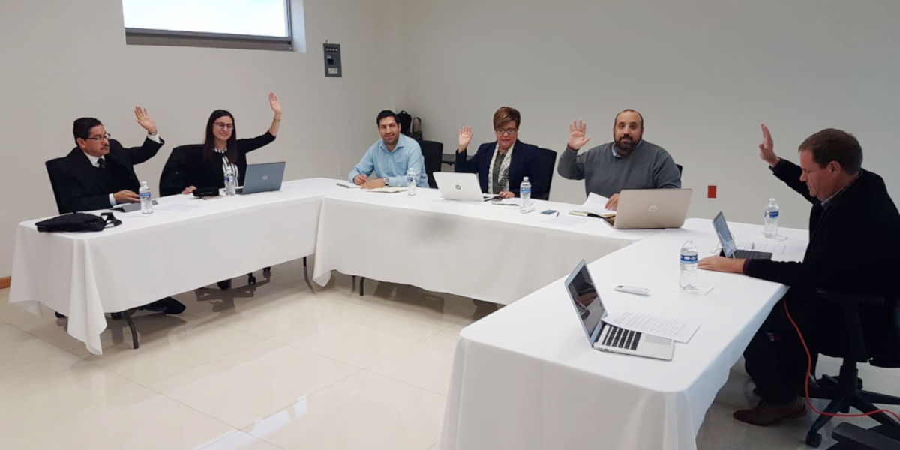
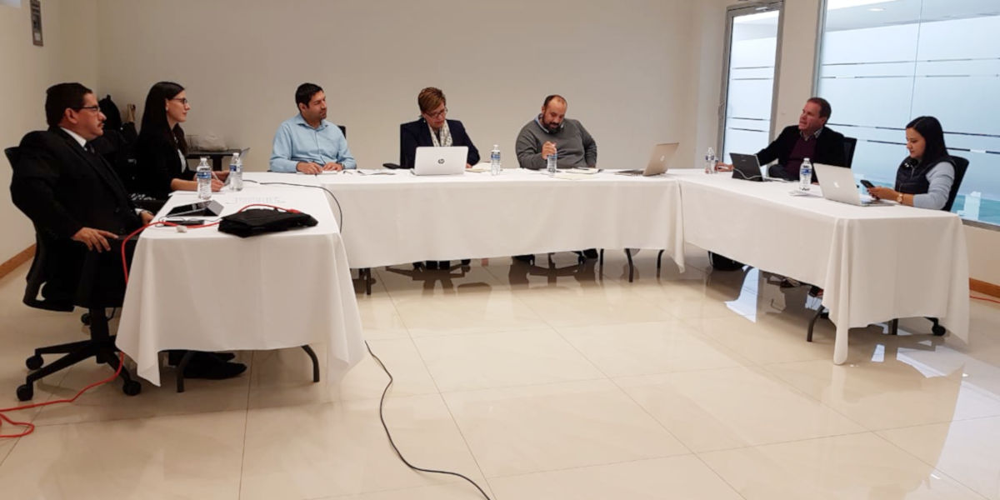

Saltillo, Coahuila.- Los integrantes de la Comisión Ejecutiva del Sistema Estatal Anticorrupción informaron sobre los avances del programa de actividades de las comisiones de Vinculación, Asuntos Jurídicos, Capacitación y Comunicación, durante la novena sesión extraordinaria que se llevó a cabo el jueves 29 de noviembre de 2018.
En la Sala de Juntas de la Secretaría Ejecutiva del Sistema Estatal Anticorrupción, ubicada en Saltillo, Coahuila, estuvieron presentes los consejeros Lourdes de Koster López, coordinadora de la Comisión Ejecutiva; Juan Adolfo Von Bertrab Saracho, Carlos Rangel Orona y Jafia Pacheco Valtierra, así como el Secretario Técnico, Manuel Gil Navarro.
Durante la sesión se dieron a conocer los avances de los proyectos de vinculación con organismos y agrupaciones de la sociedad civil que impulsa el Consejero Juan Adolfo Von Bertrab y del proyecto de trabajo Compliance Empresarial, propuesto por el Consejero Carlos Rangel Orona.
Así mismo la Consejera Jafia Pachecho Valtierra presentó una política de denuncia y la Consejera Lourdes de Koster habló de la actualización del sitio web del CPC Coahuila y las actividades a desarrollar en el marco del Día Internacional Contra la Corrupción, el próximo domingo 9 de Diciembre, que incluirán acciones que permitan generar una cultura de honestidad e integridad entre la población, así como los mecanismos e iniciativas impulsados desde el Sistema Estatal Anticorrupción para inhibir estas prácticas en la entidad.


29 noviembre 2018